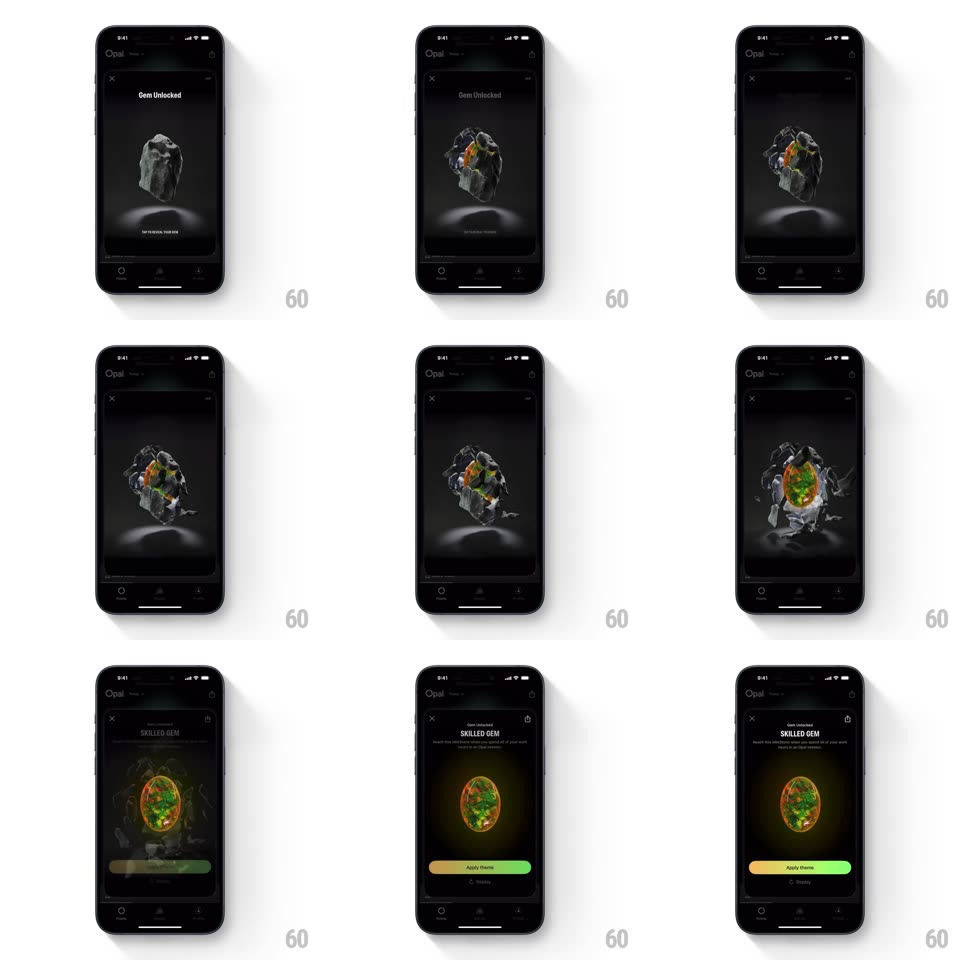

Media
Frame-by-frame

Rebuild this interaction 1:1: Opal's gem unlock - on the dark "Gem Unlocked" screen, a floating grey rock hangs over its reflection; a tap cracks it, fiery orange-green light bursts from the fissures, the shell shatters away in shards, and a glowing opal gem is revealed under the "SKILLED GEM" title with an Apply Theme button.

Rebuild this interaction 1:1: Opal's gem unlock - on the dark "Gem Unlocked" screen, a floating grey rock hangs over its reflection; a tap cracks it, fiery orange-green light bursts from the fissures, the shell shatters away in shards, and a glowing opal gem is revealed under the "SKILLED GEM" title with an Apply Theme button. ## Integration Integration: stack-agnostic spec - springs given as stiffness/damping, timed motions as duration + curve; map every value to your framework and animation library of choice. ## Scene Near-black screen, X close top-left, "Gem Unlocked" header, and a 3D rock floating center with a soft floor reflection beneath it. Final state: the revealed gem (translucent opal with green-gold fire), "SKILLED GEM" title, one-line description, and a gradient Apply Theme button (yellow -> green) with a Share link. ## Motion spec Pattern: staged shatter reveal. - Idle: the rock bobs gently (translateY +/-6px, 3s loop) with a slow rotation (~12s per revolution); the reflection mirrors it, blurred. - Tap: the rock shakes in place (rotate +/-3deg, 3 frames, 150ms) and glowing cracks spider across it (crack lines draw on over 300ms, orange emissive). - The cracks flash bright (luminance spike, 120ms) and the shell bursts: ~8-10 shards fly outward (each on its own arc, 500-700ms, gravity pull, fading over the last 200ms). - The gem is revealed with a light bloom from its core (radial glow scale 0 -> 1, 400ms, ease-out), then settles into a slow spin with inner fire flickering (emissive noise, subtle). - Title and button fade/slide in after the gem lands (translateY 12px -> 0, opacity 0 -> 1, 300ms, staggered 100ms). ## Calibration - One tap, one full sequence (~1.5s to the settled gem) - no multi-tap gating. - Shards fly in 3D with perspective - near shards larger and faster. ## Reduced motion Rock fades, gem fades in; no shard flight. ## Don't miss - The floor reflection updates through every stage - rock, cracking, shards, gem. - The gem's fire is green-gold on the inside only; the outer shell stays dead grey until it shatters.